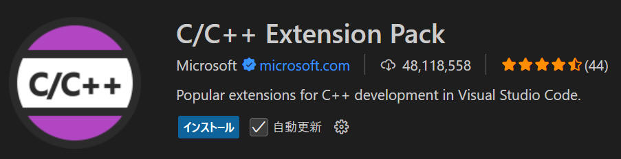
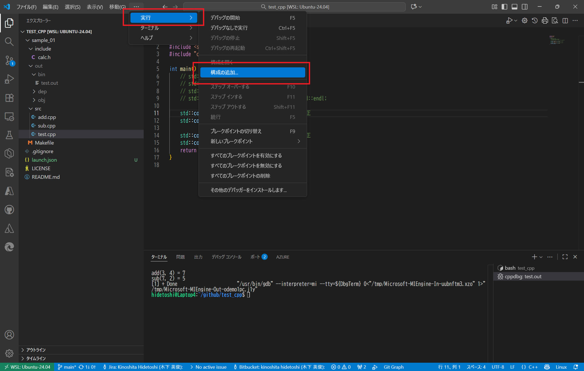
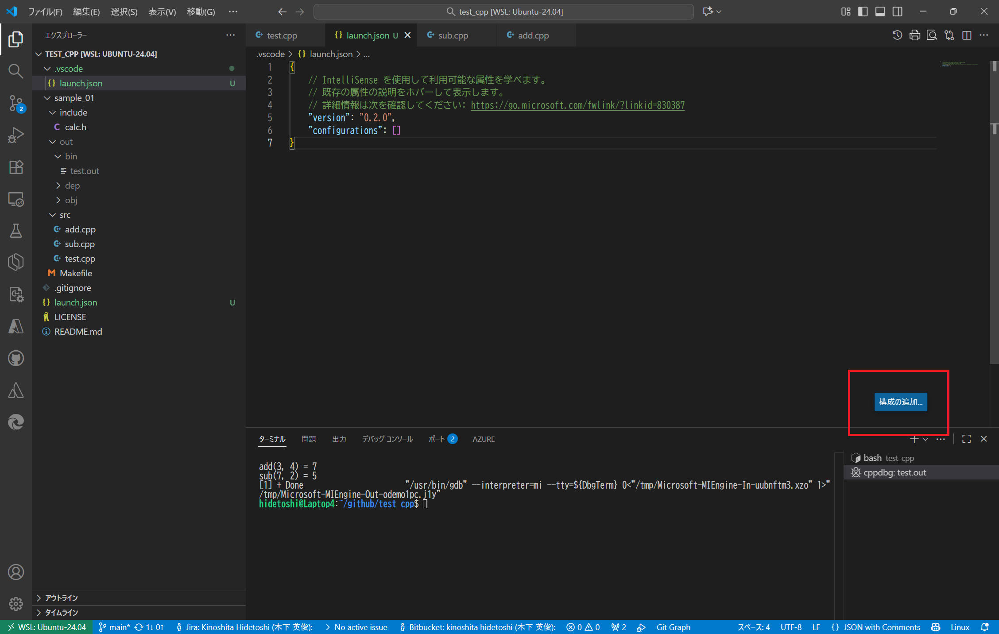
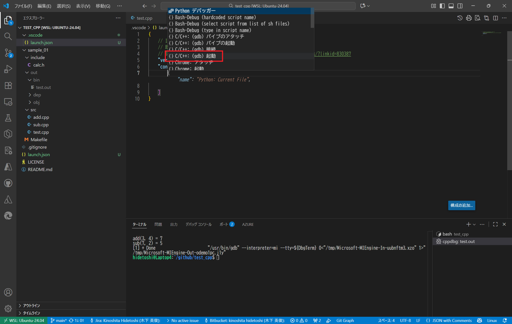
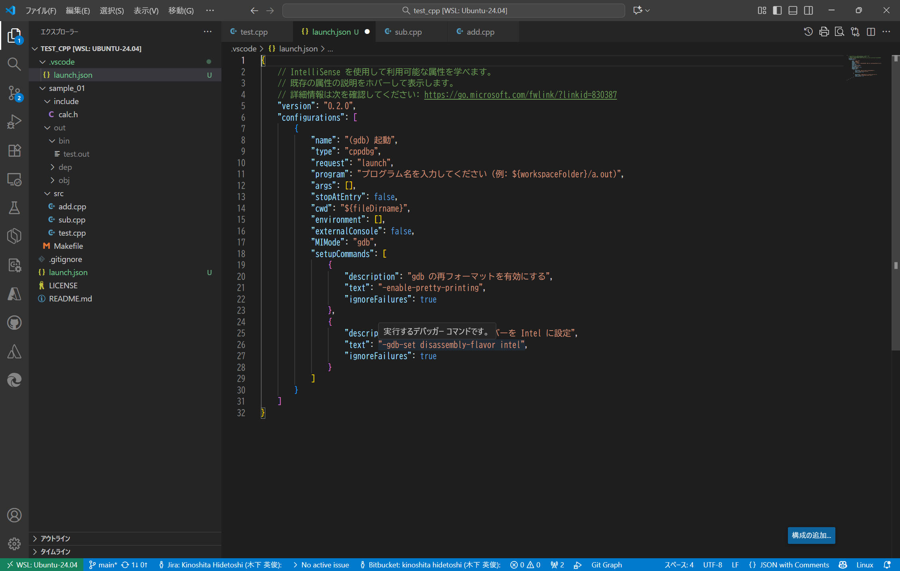
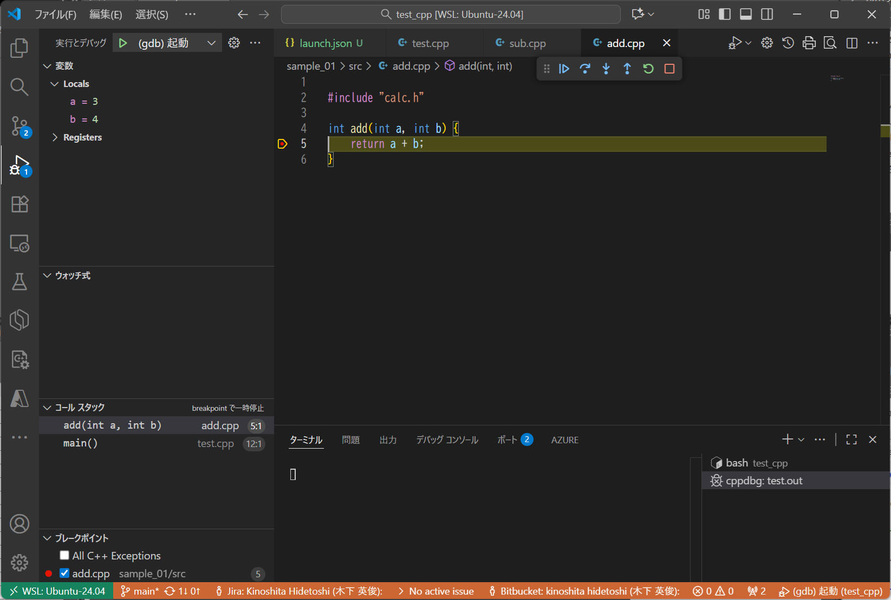
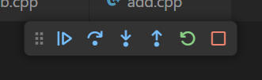
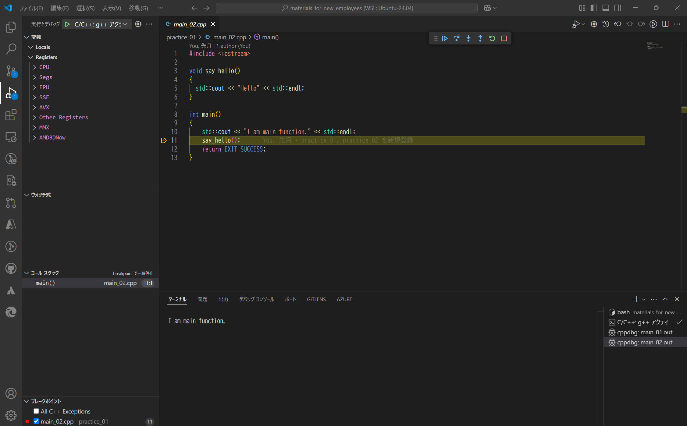

[vscode] c/c++ デバッグ方法 (launch.json, settings.json, tasks.json)
"Visual Studio Code" の
launch.json, settings.json,
tasks.json などについて調べた内容をこちらに記載します。
Visual Studio Code で C/C++ 言語をデバッグする際に使用できる機能を紹介します。
機能概要
| 機能 |
説明 |
| ブレークポイント |
- ソースコードエディタの行番号の左側をクリックすると、赤い丸が設定されます。この赤丸がブレークポイントです。
[F9] でもカーソル位置にブレークポイントを設定できます。
- ブレークポイントを設定すると、その行でプログラムが一時停止します。
|
| 変数ウィンド |
- 画面左側には、変数ウィンドウを表示します。
- 変数ウィンドウでは、実行中の変数の値を確認できます。
|
| ステップオーバー |
プログラムをステップ実行するための機能です
|
| ステップイン |
プログラムをステップ実行するための機能です
- 別の関数をコールする行の場合、その関数内に入ります
- [F11]
|
| ステップアウト |
プログラムをステップ実行するための機能です
- 現在の関数の終わりまで実行し、関数をコールした側の行へ戻ります
- [Shift] + [F11]
|
上記機能について、詳細設定を下記３つのファイルで行います。
これら３つのファイルを ./.vscode/ フォルダに保存します。
launch.json, settings.json, tasks.json 説明
| ファイル |
説明 |
| launch.json |
これはデバッグ設定ファイルです。プロジェクトでデバッグを行う際に、このファイルでデバッグの構成を設定します。たとえば、どのプログラムをデバッグするか、どのポートで通信するかなどが記述されます。デバッグ構成を複数定義して、選択的に使用することも可能です。 |
| settings.json |
これはエディター全体やプロジェクト固有の設定を保存するファイルです。たとえば、フォントのサイズやテーマ、エディターの自動整列、プロジェクトごとの特別な設定などをカスタマイズするために使用されます。ユーザー全体の設定とワークスペース固有の設定が区別されています。 |
| tasks.json |
これはビルドやその他のタスクの設定ファイルです。このファイルを使って、ビルドの自動化や特定のコマンドの実行を設定できます。例えば、「コードをコンパイルしてエラーを確認する」というタスクを簡単に実行できるようになります。 |
Visual Studio Code で C/C++ を扱うために、拡張機能を使用します。
拡張機能メニュー（ Ctrl + Shift + X ）から 「C/C++
Extension Pack」
を検索し、インストールしてください。

launch.json を作成する手順について記載します。
1.
[実行] > [構成の追加] をクリックします

2.
launch.json ファイルを生成します。続いて［構成の追加...］ボタンををクリックします

3. "{} C/C++: (gdb) 起動" をクリックします

こんな感じの launch.json を生成してくれます

launch.json 全文をこちらで紹介します
{
// IntelliSense を使用して利用可能な属性を学べます。
// 既存の属性の説明をホバーして表示します。
// 詳細情報は次を確認してください: https://go.microsoft.com/fwlink/?linkid=830387
"version": "0.2.0",
"configurations": [
{
"name": "(gdb) 起動",
"type": "cppdbg",
"request": "launch",
"program": "プログラム名を入力してください (例: ${workspaceFolder}/a.out)",
"args": [],
"stopAtEntry": false,
"cwd": "${fileDirname}",
"environment": [],
"externalConsole": false,
"MIMode": "gdb",
"setupCommands": [
{
"description": "gdb の再フォーマットを有効にする",
"text": "-enable-pretty-printing",
"ignoreFailures": true
},
{
"description": "逆アセンブリ フレーバーを Intel に設定",
"text": "-gdb-set disassembly-flavor intel",
"ignoreFailures": true
}
]
}
]
}
4.
"program": "プログラム名を入力してください (例: ${workspaceFolder}/a.out)"
の部分を、実際に起動するプログラム内容へ変更します。
ここでは私のテストプログラム内容（"program":
"${workspaceFolder}/sample_01/out/bin/test.out"）へ変更しました。変更後の
launch.json を以下に記載します。
{
// IntelliSense を使用して利用可能な属性を学べます。
// 既存の属性の説明をホバーして表示します。
// 詳細情報は次を確認してください: https://go.microsoft.com/fwlink/?linkid=830387
"version": "0.2.0",
"configurations": [
{
"name": "(gdb) 起動",
"type": "cppdbg",
"request": "launch",
"program": "${workspaceFolder}/sample_01/out/bin/test.out",
"args": [],
"stopAtEntry": false,
"cwd": "${fileDirname}",
"environment": [],
"externalConsole": false,
"MIMode": "gdb",
"setupCommands": [
{
"description": "gdb の再フォーマットを有効にする",
"text": "-enable-pretty-printing",
"ignoreFailures": true
},
{
"description": "逆アセンブリ フレーバーを Intel に設定",
"text": "-gdb-set disassembly-flavor intel",
"ignoreFailures": true
}
]
}
]
}
以上で launch.json の事前設定を完了です。
1.
さて本番。ブレークポイント、を設定します。
行番号の左側あたりをマウスクリックすることで、ブレークポイントを On/Off することができます。
赤丸 が付いている状態はブレークポイント On の状態です。
下図では return a + b; の部分に設定しています。

2.
［F5］キーを押してデバッグ実行を開始します。
これまでの設定を無事に行えていれば、下図のようにブレークポイントを設定した箇所でプログラム実行を一時停止し、変数領域（画面左側ウィンドウ）に各変数の状態を表示してくれます。

3.
続けて以下の操作が可能です。
- 続行 (F5)
- ステップオーバー (F10)
- ステップイン (F11)
- ステップアウト (Shift+F11)
- 再起動 (Ctrl+Shift+F5)
- 停止 (Shift+F5)
下図アイコンから同じ操作を可能です

引数を付けてプログラムをデバッグ実行することも可能です。
引数を指定するには、launch.json の "args"キーに指定します。複数個の引数を渡す場合はカンマ区切りで指定します。以下がサンプルファイルです。
{
"version": "0.2.0",
"configurations": [
{
"name": "launch_cpp",
"type": "cppdbg",
"request": "launch",
"program": "${workspaceFolder}/debug/main.out",
"args": ["0", "100", "200"],
"stopAtEntry": false,
"cwd": "${fileDirname}",
"environment": [],
"externalConsole": false,
"MIMode": "gdb",
"setupCommands": [
{
"description": "gdb の再フォーマットを有効にする",
"text": "-enable-pretty-printing",
"ignoreFailures": true
}
]
}
]
}
上記の launch.jsonファイル を実行し、引数を表示するプログラム例を以下に記載します。
["testcode.cpp"]
int main(int argc, char *argv[])
{
int i = 0;
printf("argc = %d\n", argc );
for( i = 0; i < argc; i++ ){
printf("argv[%d] = %s\n", i, argv[i] );
}
return 0;
}
実行結果は以下の通りです。引数が意図通りに渡されていることを確認できました。
argc = 4
argv[0] = [workspaceFolder]/debug/main.out
argv[1] = 0
argv[2] = 100
argv[3] = 200
簡単なプログラム評価など行う場合は、ソースコードファイルが１つしかない場合も多かったりします。
そういった環境だと、上記のような launch.json を都度準備するのは面倒ですね。共通の launch.json
でいつでも簡単にビルド＆デバッグできるとうれし買ったりします。そういった環境構築の例を紹介します。
以下の記事は、選択中の１つのソースファイルのみを対象に実行するものです。
[Ctrl + Shift + B]でビルド、[F5]でデバッグ開始、をそれぞれできるようにします。
vscode 上でブレークポイントを設定し、変数やレジスタの内容を vscode 画面上で確認することができます。

[環境]
|
| コンパイラ : |
g++/gdb (Ubuntu 13.3.0-6ubuntu2~24.04) 13.3.0 |
|
|
| OS : |
Ubuntu 24.04.2 LTS (WSL) |
|
|
tasks.json,
launch.json ファイルを以下のように設定することで実現できます。
tasks.json の設定
c++プログラムをビルドするためのtasks.jsonファイルを作成します。以下はg++を使用したビルドの例です。
私の趣味でビルド結果である実行ファイル拡張子を .out としていますが、ここ（.out）は削除しても問題ありません。
{
"tasks": [
{
"type": "cppbuild",
"label": "C/C++: g++ アクティブなファイルのビルド",
"command": "/usr/bin/g++",
"args": [
"-fdiagnostics-color=always",
"-g",
"${file}",
"-o",
"${fileDirname}/${fileBasenameNoExtension}.out"
],
"options": {
"cwd": "${fileDirname}"
},
"problemMatcher": [
"$gcc"
],
"group": {
"kind": "build",
"isDefault": true
}
}
],
"version": "2.0.0"
}
launch.json の設定
デバッグ用にlaunch.jsonを設定します。以下はgdbを使った例です。
{
"version": "0.2.0",
"configurations": [
{
"name": "C/C++: g++ アクティブ ファイルのビルドとデバッグ",
"type": "cppdbg",
"request": "launch",
"program": "${fileDirname}/${fileBasenameNoExtension}.out",
"args": [],
"stopAtEntry": false,
"cwd": "${fileDirname}",
"environment": [],
"externalConsole": false,
"MIMode": "gdb",
"setupCommands": [
{
"description": "gdb の再フォーマットを有効にする",
"text": "-enable-pretty-printing",
"ignoreFailures": true
},
{
"description": "逆アセンブリ フレーバーを Intel に設定",
"text": "-gdb-set disassembly-flavor intel",
"ignoreFailures": true
}
],
"miDebuggerPath": "/usr/bin/gdb"
}
]
}
[F5]でビルドまで実施する場合は下記のように１行追加します。
ここに記載のラベル名（"C/C++: g++ アクティブなファイルのビルド" ）は
tasks.json の "label" と完全一致する必要があります。
{
"version": "0.2.0",
"configurations": [
{
"name": "C/C++: g++ アクティブ ファイルのビルドとデバッグ",
"type": "cppdbg",
"request": "launch",
"program": "${fileDirname}/${fileBasenameNoExtension}.out",
"args": [],
"stopAtEntry": false,
"cwd": "${fileDirname}",
"environment": [],
"externalConsole": false,
"MIMode": "gdb",
"setupCommands": [
{
"description": "gdb の再フォーマットを有効にする",
"text": "-enable-pretty-printing",
"ignoreFailures": true
},
{
"description": "逆アセンブリ フレーバーを Intel に設定",
"text": "-gdb-set disassembly-flavor intel",
"ignoreFailures": true
}
],
"preLaunchTask": "C/C++: g++ アクティブなファイルのビルド",
"miDebuggerPath": "/usr/bin/gdb"
}
]
}
手順
- ビルドおよびデバッグ対象の c++ ファイルを保存します。
以下、対象の c++ ファイルをアクティブ（選択状態）にして実施します。
- [Ctrl + Shift + B]
を押してビルドを実行します（tasks.jsonの設定に従ってビルド）
- [F5]キーを押してデバッグを開始します（デバッガはlaunch.jsonの設定に従ってプログラムを実行）
本ページの情報は、特記無い限り下記 MIT ライセンスで提供されます。
The MIT License (MIT)
Copyright 2025 Kinoshita Hidetoshi
Permission is hereby granted, free of charge, to any person obtaining a copy
of this software and associated documentation files (the "Software"), to deal
in the Software without restriction, including without limitation the rights
to use, copy, modify, merge, publish, distribute, sublicense, and/or sell
copies of the Software, and to permit persons to whom the Software is
furnished to do so, subject to the following conditions:
The above copyright notice and this permission notice shall be included in all
copies or substantial portions of the Software.
THE SOFTWARE IS PROVIDED "AS IS", WITHOUT WARRANTY OF ANY KIND, EXPRESS OR
IMPLIED, INCLUDING BUT NOT LIMITED TO THE WARRANTIES OF MERCHANTABILITY,
FITNESS FOR A PARTICULAR PURPOSE AND NONINFRINGEMENT. IN NO EVENT SHALL THE
AUTHORS OR COPYRIGHT HOLDERS BE LIABLE FOR ANY CLAIM, DAMAGES OR OTHER
LIABILITY, WHETHER IN AN ACTION OF CONTRACT, TORT OR OTHERWISE, ARISING FROM,
OUT OF OR IN CONNECTION WITH THE SOFTWARE OR THE USE OR OTHER DEALINGS IN THE
SOFTWARE.